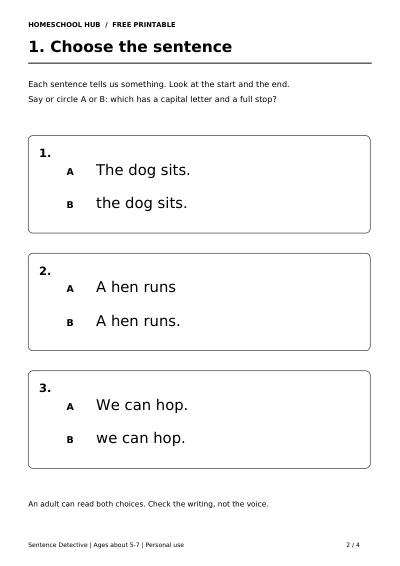

Free printable
Sentence Detective: Capitals and Full Stops
Ages about 5–7
Look for a capital letter at the beginning and a full stop at the end of a short sentence. Choose correctly punctuated examples, then repair three sentences.
Four A4 pages include a parent model, three choice questions, three repair activities and all answers. The examples are short sentences that tell us something.
Try 5–10 minutes with an adult reading each sentence aloud. Print pages 2–3 in black and white. Children can point, say what to change or write the sentences. An adult can write their answers.
Keep the words in the same order. Check both the capital letter and the full stop. This activity practises punctuation; independent reading and handwriting are optional.
Build word reading with CVC Word Chains or tell events in order with First, Next, Last.
